A sample-based acoustic drum plugin and standalone workstation built with JUCE and modern C++20 for Linux musicians. Designed with zero-copy sample playback, multi-zone articulations, continuous e-drum calibration, acoustic crosstalk bleed, and an integrated rehearsal suite.
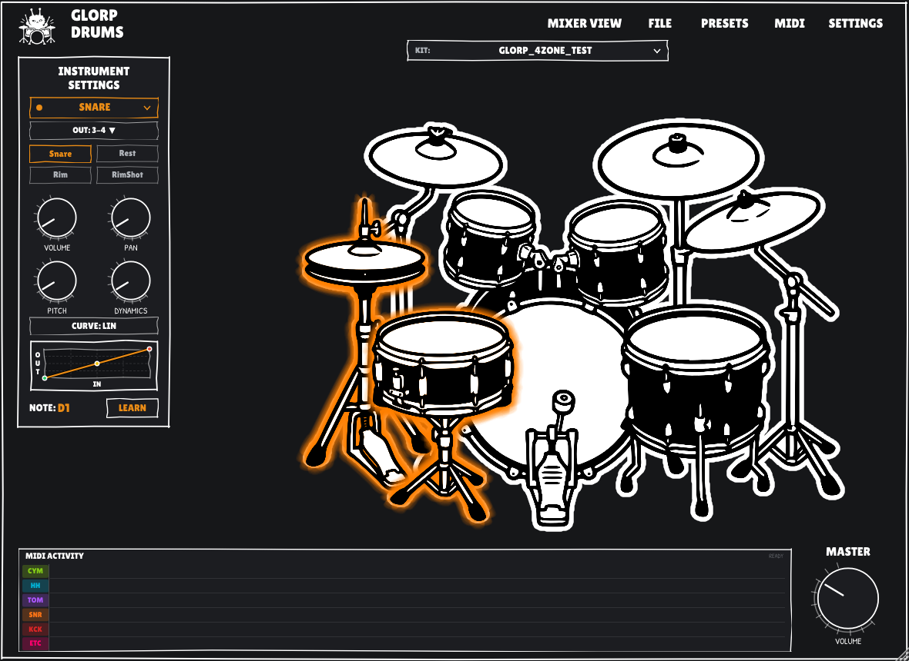
Live playthroughs, rehearsal workflows, and custom drumkit design.
A breakdown of the sound engine, mixer console, practice deck, and authoring tools.
Eliminates sprawling directories of thousands of loose audio files by packaging complete drum kits into a standardized ZIP64 archive. Samples are streamed directly from disk via zero-copy memory mapping (mmap) without extracting to temporary files.
Tailored for electronic drum kit responsiveness with smooth continuous hi-hat pedal tracking across CC#4 (equal-power crossfading between Closed, Semi-Open, Open, and Splash), 15ms anti-click cymbal choke damping, and customizable velocity response curves.
Route individual kit pieces or microphone groups across 16 discrete stereo DAW stem pairs (Out 1/2 through Out 31/32) for multitrack mixing in Reaper, Ardour, or Bitwig.
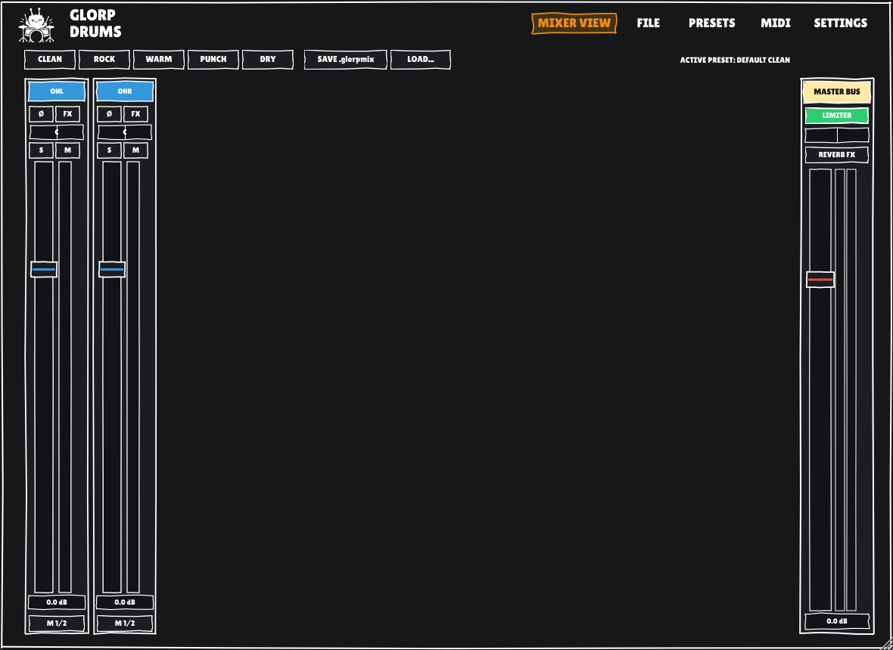
Per-mic channel strips & master limiter
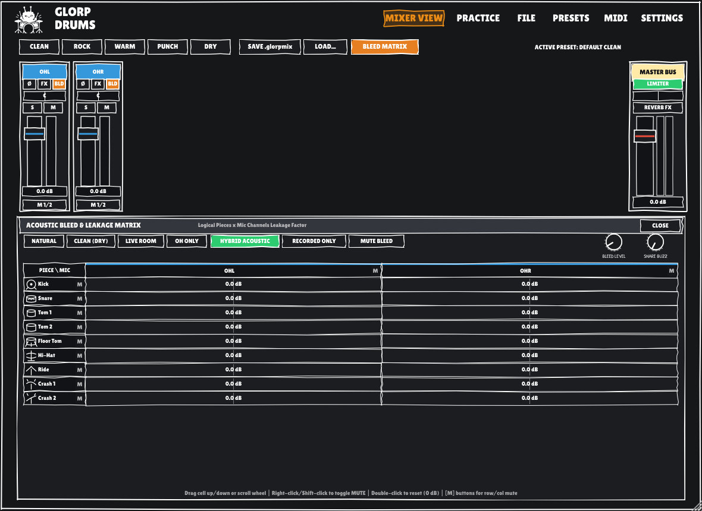
Acoustic crosstalk matrix with spill controls
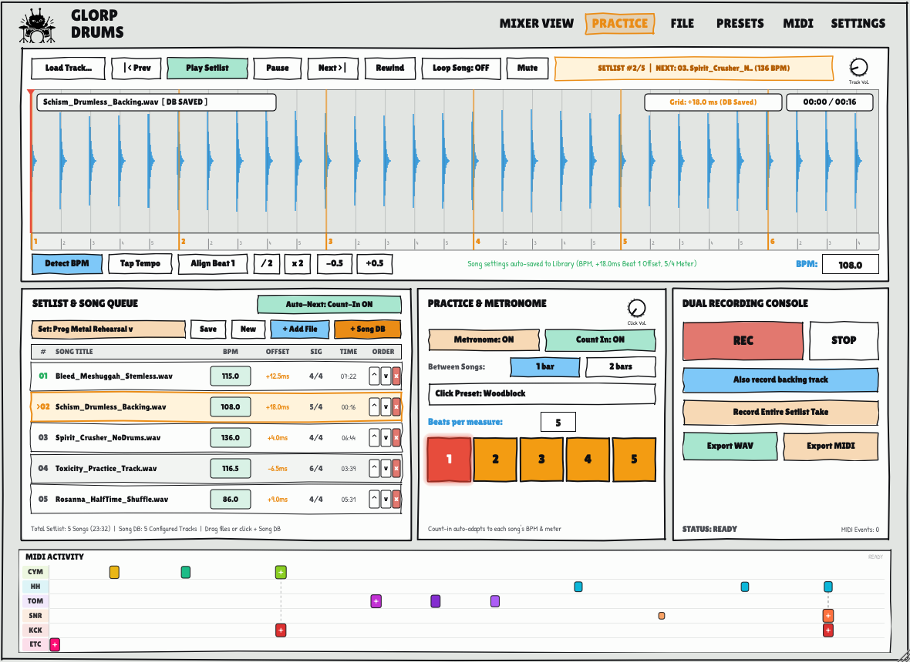
Full-width waveform deck with tempo detection & 3-column setlist console
The integrated practice suite allows drummers to rehearse against backing tracks, detect tempos automatically, organize multi-song setlists, and record performances.
song_library.xml for instant recall in any setlist.The companion standalone visual application for designing, editing, and packaging drum kits.
GlorpKit Studio is a dedicated authoring tool bundled directly with GlorpDrums. It lets you create custom multi-articulation drum kits from raw audio samples or layered artwork:
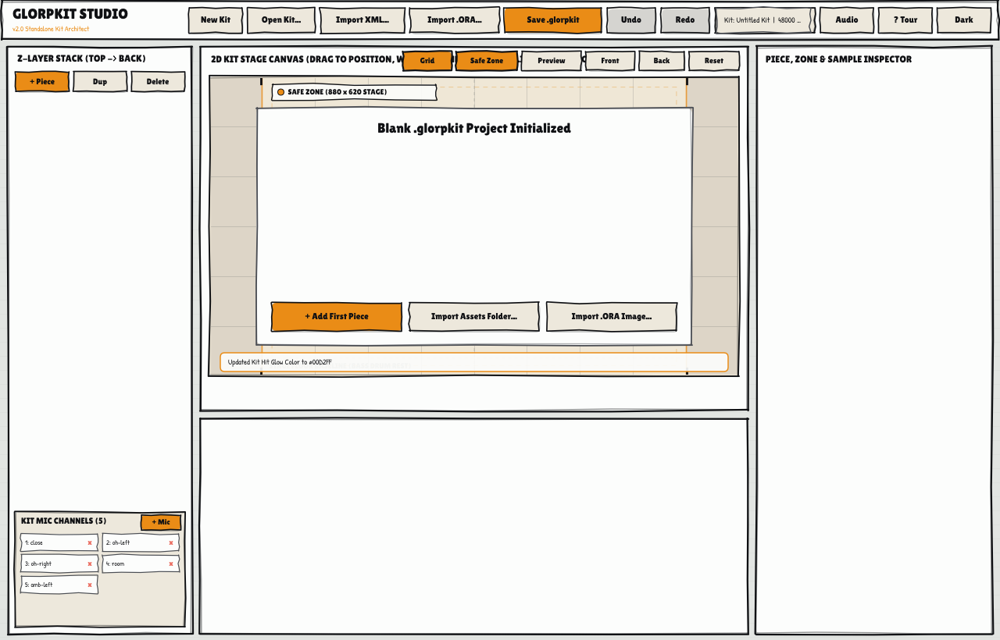
GlorpKit Studio: Instrument mic routing, channel deletion, and custom cyan glow picker
High-fidelity multi-velocity, multi-channel acoustic drum libraries packaged into zero-copy, memory-mapped .glorpkit archives. Built using open Creative Commons samples from ReaperDrummer (Tchackpoum). Download and drop into ~/.glorpdrums/kits/.
12-Piece Acoustic Kit • Direct & Overhead Bleed
The reference production kit featured in our live playthroughs. Deep vintage 1970s mahogany shells, Ludwig Supraphonic 400 snare, Paiste & Meinl Byzance cymbals, recorded with calibrated overhead and room bleed matrices for authentic live room acoustics.
Source: ReaperDrummer (Tchackpoum) • Creative Commons (CC-BY-4.0)
Place in ~/.glorpdrums/kits/
Classic British Maple Kit • Punch & Resonance
Crafted from premium thin undersized maple shells with beech reinforcement rings. Delivers warm singing sustain, explosive tom tone, tight snare crack, and rich cymbal dynamics across multiple velocity layers and round-robin variations.
Source: ReaperDrummer (Tchackpoum) • Creative Commons (CC-BY-4.0)
Place in ~/.glorpdrums/kits/
Click any screenshot to view full-resolution image.
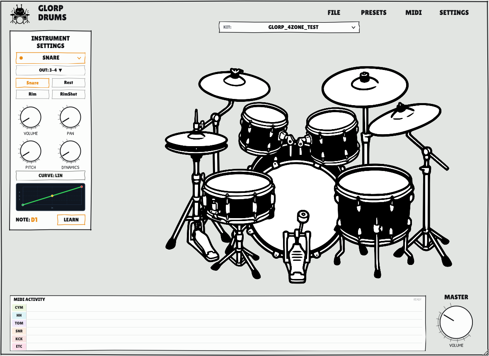
Sketch (Light) Theme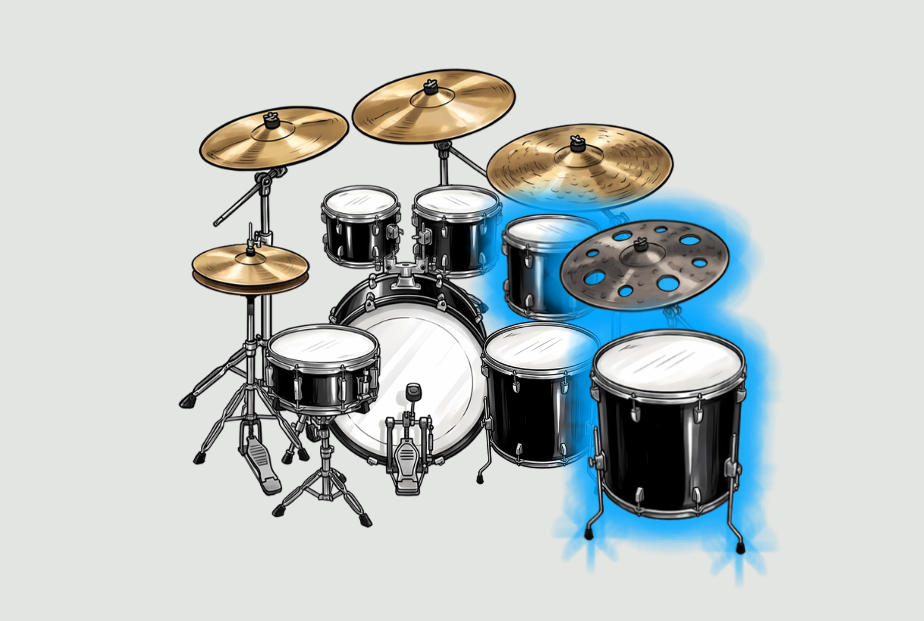
12-Piece Ludwig Kit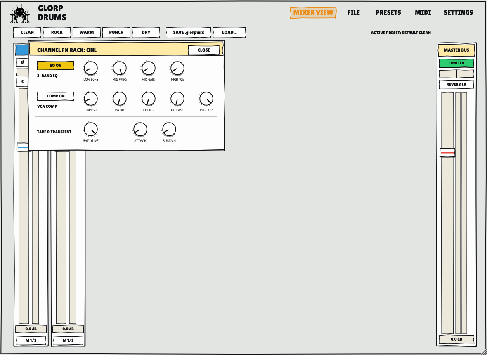
Channel DSP FX Rack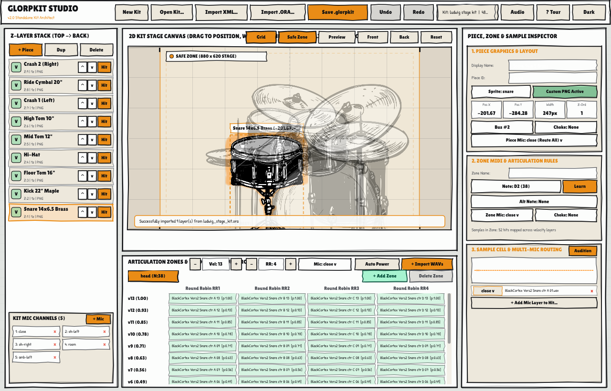
13-Velocity Matrix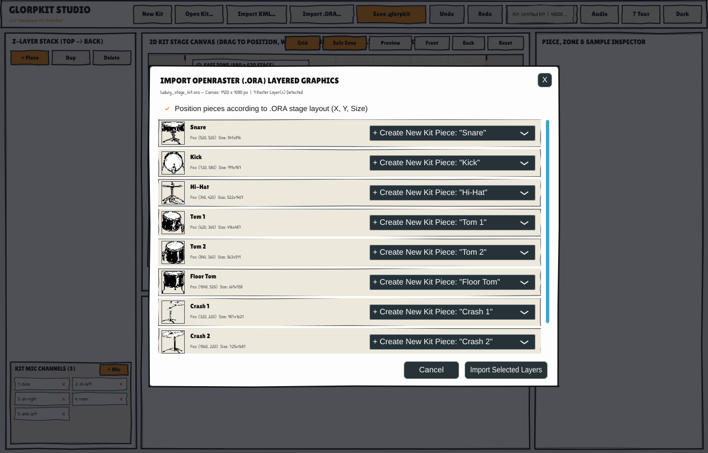
OpenRaster Importer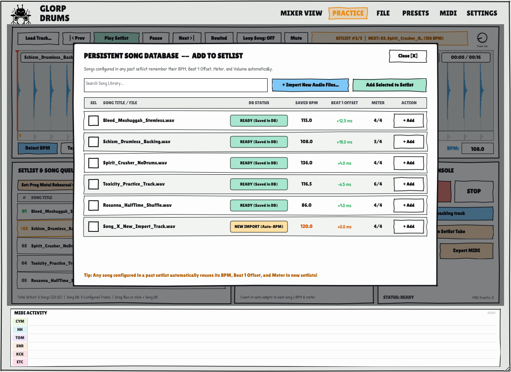
Persistent Song DB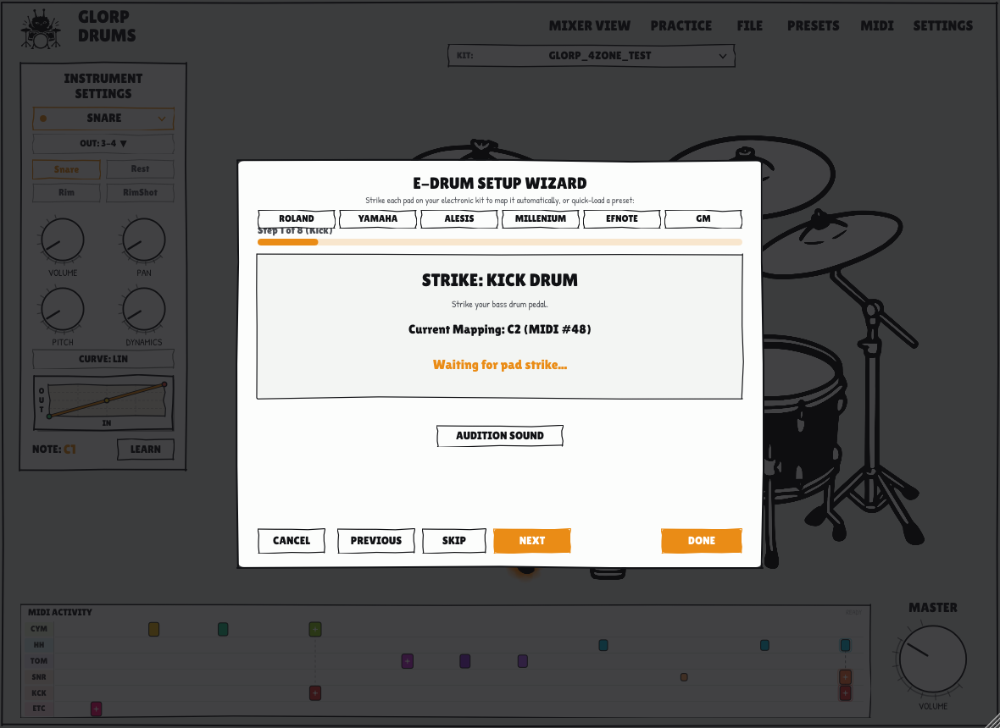
E-Drum MIDI SetupCompile GlorpDrums on Linux (x86_64) using CMake and GCC or Clang.
# 1. Clone repository with submodules (JUCE)
git clone --recurse-submodules https://github.com/asuka-glorp/GlorpDrums/.git
git clone --recurse-submodules https://github.com/asuka-glorp/GlorpDrums.git
cd GlorpDrums
# 2. Configure release build with CMake
cmake -B build -DCMAKE_BUILD_TYPE=Release
# 3. Compile all targets (GlorpDrums, VST3, LV2, GlorpKitEditor)
cmake --build build -j$(nproc)
# 4. Verify test suite
./build/verify_fixes && ./build/glorp_core_tests
libasound2-dev)libx11-dev, libxrandr-dev, etc.)build/GlorpDrums_artefacts/Release/